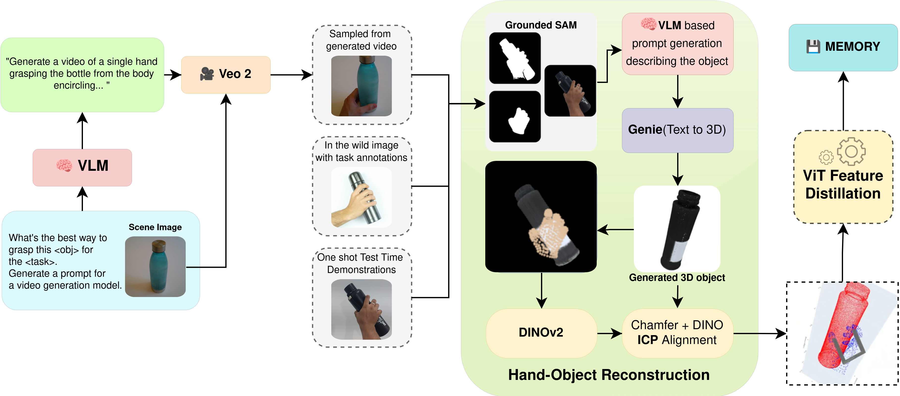

Task-Oriented Grasping with Conditioning on Generative Examples
Accepted at ICML & RSS 2025 Workshops

Accepted at ICML & RSS 2025 Workshops
Task-Oriented Grasping (TOG) is a challenging problem that requires an understanding of task semantics, object affordances, and the functional aspects of how an object should be held for a purpose. To address these challenges, we introduce GRIM (Grasp Re-alignment via Iterative Matching), a novel training-free framework for task-oriented grasping. Initially, a coarse alignment strategy is developed using a combination of geometric cues and the scoring of PCA-reduced DINO features. Subsequently, the full grasp pose associated with the retrieved memory instance is transferred to the aligned scene object and further refined against a set of task-agnostic, geometrically stable grasps generated for the scene object, prioritizing task compatibility. Compared to previous training-based methods, our approach is able to achieve high generalization with a few conditioning examples.


We use Veo 2 to generate 5-second and 8-second, object-centered videos depicting human hand interactions for grasp pose estimation. Given an object image and name from the TaskGrasp dataset [Murali et al., 2020b], Veo 2 generates a detailed grasp description tailored to a specific task. This is used to prompt the Veo 2 video generation model, which produces consistent, realistic grasping videos. We extract the middle frame—where the grasp is clearest—for downstream use. This approach enables scalable, high-quality data generation for learning task-conditioned grasps.
@inproceedings{shailesh2025GRIM,
title={{GRIM: TOG: Task-Oriented Grasping with Conditioning on Generative Examples}},
author={Shailesh, Alok Raj, Nayan Kumar, Priya Shukla, Andrew Melnik, Michael Beetz, Gora Chand Nandi},
year={2025}
}